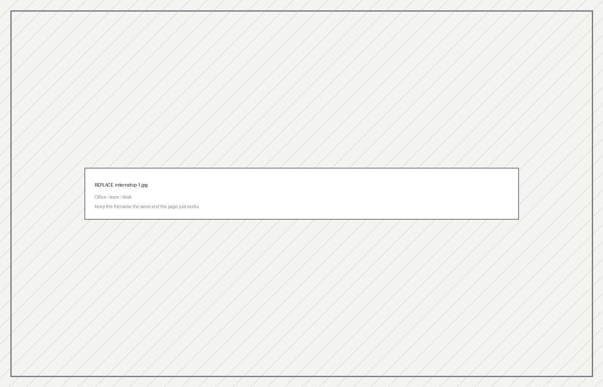
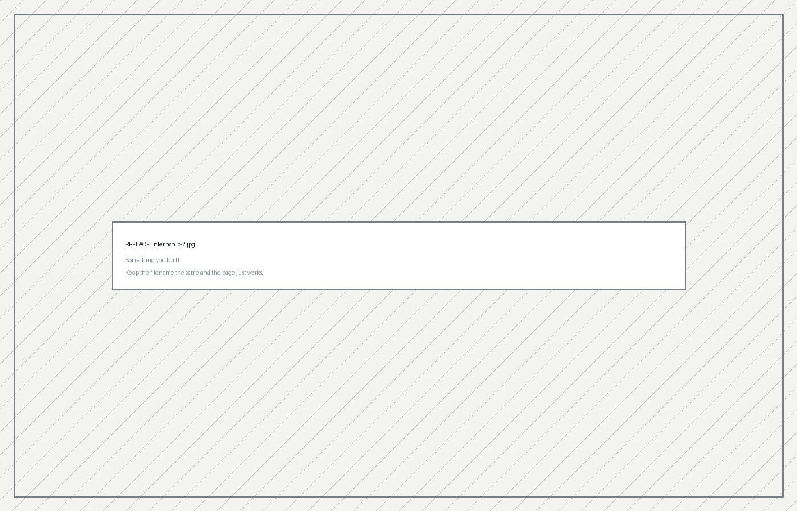

Internship
Software Engineer Intern
at Fuzzy AI
Singapore · Summer 2026
01
The company
What does Fuzzy AI actually do — in plain language, the way you'd explain it to someone outside tech? Cover: the product and who uses it, roughly how big the company and your team were, where it sits in Singapore's tech scene, and how the engineering org was structured. Two or three paragraphs.
Write it here.
- CompanyFuzzy AI
- LocationSingapore
- RoleSoftware Engineer Intern
- TeamTeam name and size
- StackLanguages, frameworks, infra you worked in

02
Role and responsibilities
What you were responsible for day to day, and what you shipped. Structure that works: a paragraph on your general remit, then 3–4 named pieces of work with what each one did and why it mattered. Include the unglamorous parts — bug triage, writing tests, reviewing PRs — because that's what shows you were treated as part of the team.
Write the overview here.
Project 1 name
What it was, what you built, what it changed.
Project 2 name
Same shape.
Project 3 name
Same shape.

03
Goals I set, and how I did
Required: pull these straight from your Goal Setting assignment.
Copy each goal in your original wording, then answer it honestly. A goal you partly met — with a clear account of what got in the way and what you'd do differently — is a stronger answer than three goals marked "achieved". Graders notice the difference.Goal 1 — paste the goal as you originally wrote it
How it went
What you did toward it, the evidence it worked, and where you fell short.
Goal 2 — paste the goal
How it went
Same.
Goal 3 — paste the goal
How it went
Same. Add or remove goal blocks to match how many you originally set.
04
What I'd tell the next intern
Optional, but it's the section that makes a portfolio feel written by a person. Three or four pieces of advice you wish you'd had in week one.